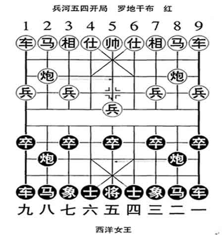
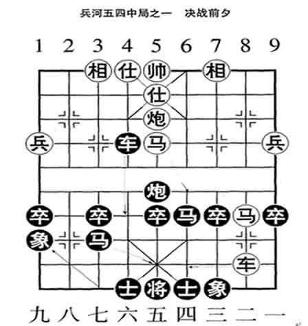
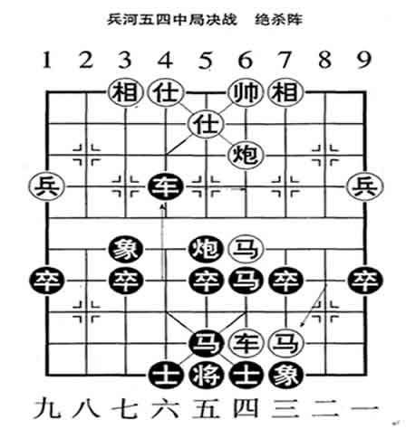
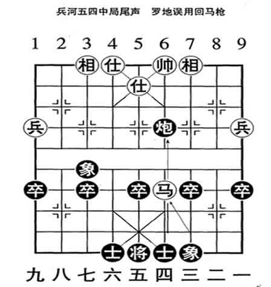

太古阵法“兵河五四”
学者E：才刚的那一局棋，即是“兵河五四”，所走之步皆是西洋女王战团与罗地干布战团天河大战的战况。罗地干布处于优势，已稳操胜券，十分得意。
战局至此时，罗地干布出阵，在阵外指挥上官青花率兵破阵。而他在一边得意洋洋……
上面这局棋是由妙师在早上演出，才刚是甲与A小姐又重演了一遍。
现在战势进入中局，且看妙师与西洋女王亲自对阵演中局。
F：在开局大战里，西洋女王走了一步马7退5。罗地干布心中大喜！自此，罗地干布占了上风优势，心中暗笑西洋女王的这一步窝心马。于是一挥大旗，左右两军出动。
罗地此时退出局外指挥。在局内由车九上官青花率阵。
罗军“车九平八”之后，西洋女王走了一步“车3平4”。这是极为关键的一招！
罗地先是有意让个虚，满以为西洋女王的主力会深入攻阵走“车3进3”杀相。但女王却闪过走了“平4”。这一招把罗地原打算走的“马五进四”，“马四进二”，以形成左右马军夹攻的阵势给破了。迫使罗军只能从左路进攻。
西洋女王以“象3进1”一招，兑平了罗军的右路。虽然罗军失去了右侧包围的攻势，但已然是大占优势。此时是天河大战，“兵河五四”局进入中局。
罗地军的原方案是中局抢攻制胜。以下是妙师与西洋女王重走中局，记录如下：
妙 师 西洋女王
马五进六（躲堵防） 车4退3（迷魂阵）
E：西洋女王的这一招，让罗地干布大惑不解？！他满以为西洋女王要走“车4平6”追击马军并封帅。罗地暗思，这女王放着好步不走，怎么招招走的是窝囊步？心中暗笑女王太愚！她这一步，不仅使罗车后马队无被追击的威胁，帅位的出口亦不被封，尚且女王的主炮队一动不能动。罗地洋洋得意，众九宫娘娘又在观阵，他再次在天河大展雄威！脸上不觉暗生光彩。
车八平六（夺帅旗） 马3退5（连环计）
罗地急令青花军攻入西洋军阵中心，展开攻坚大战。西洋女王又来个窝心马。罗地大为振奋，此时西洋女王只有招架之势，而绝无还手之力！至此，罗军已占绝对、绝对的优势，完全控制了战局！
帅五平六（倾军动） 象1进3（大虚无）
罗军全军大进攻，主帅离了帅位，亲自出战，以成“推波助浪”阵。
西洋女王这步走的是大虚无阵。这一招让罗地干布更是迷惑不解？！暗思这又叫个什么阵？不是等着让我打吗？
炮五平六（雷震天） 车4进3（稳中险）
马八进七（布绝杀） 车4平6（暗伏击）
马六退八（击大车） 炮5平6（布迷局）
至此中局进入尾声，两军已短兵相接，罗军已只能攻而无退路。此时，罗地干布开始警觉，方知是阵中有阵，法中有法。但兵行至此，也必须是对阵强攻。心想，攻坚之战，虽不能成绝杀了，但依然是占优势。此时，忽听见西洋女王暗传密音：“真笨！”气得罗地火冒三丈！一摆帅旗，歼击主力！
马八退六（吃大车） 炮6退3（回马箭）
炮六进四（歼马队） 马5进6（光明现）
马七退六（大拼杀） 炮6进5（中局完）
兵战此地，忽地大日如来展现神光阵，双方纷纷收阵……
只见大日轻声说，罗地，就算是你和女王战个平局吧，可否？
罗地一屁股坐下，侧过身去按剑不语，但心中却是不服气！
甲：那罗地与女王又单独在一起吵什么？
E：女王训斥他，是暗中大日如来护着他，要不，定要在终局一战让罗地落地！
甲：可是终局一战未必罗地就非败不可？
E：那是败定了！不信，你们走走终局，看看谁又有本事帮罗地打胜？不用说打胜，就是打成平局，也算是你有本事！
F：这“兵河五四”阵局，罗地打遍了天河，无人敢挡，可回回都是败在西洋女王手里。哪怕就是让罗地打胜一次，他也就顺气了。可偏偏西洋女王就是战不败！
甲：罗地为何战不过西洋女王呢？
E：就像是孙猴子大战二郎神，就差那一变。
甲：这次天河大战是什么时间？
E：就在昨天，1996年5月18日，阴历四月初二，玄龙生日刚满一周月。西洋女王也并非是真想把罗地干布打出断魂关。只是想教训他一下，当了天皇也别太狂！战后，罗地一天没好气，心里觉得窝囊。
阵上，九天玄女见罗地还想把终局战完，就头戴凤冠，行到罗地面前。轻语道：一切要听大日如来的……不准再战了！
甲：观中国古棋谱，以及近代、现代各种棋谱，尚未见有记录“兵河五四”战局？
E：兵河五四乃天上战局，凡人间又哪里能有？当初，将天上战局制成象棋，是演化兵法用的。大以后，渐渐传入人间。
今晨一早，就见师独自摆棋。我好生奇怪？难知师还有这种雅兴！问之，曰：兵河五四。又说，本是稳胜的局，怎么就又败了呢？
下面是罗地干布与西洋女王天河大战，兵河五四开局。
罗地干布 西洋女王
1、 兵河五四 炮8平5 2、砲二平五 炮5进3
3, 士六进五 马8进7 4、马八进七 车9平8
5、 砲八平九 车8进6 6、马二进三 车8平7
7、马七进五 炮2平5 8、砲五进二 炮5进3
9、 砲九平五 炮5退1 10、马五进六 车7平3
11、马三进五 马7退5 12、车九平八 车3平4
13、车一平二 马2进3 14、车二进七 车1进1
15、车八进八 车1进1 16、马六进八 马5进6
17、车二平一 相3进1

至此，兵河五四（如图一），开局结束，进入中局（如图二）。

接下，是兵河五四中局决战。
18、马五进六 车4退3 19、车八平六 马3退5
20、帅五平六 相1进3 21、砲五平六 车4进3
22、马八进七（如图三）

至此（如图三），罗地军已获全胜，罗军已成为不可抗拒的绝杀阵。
阵外锣鼓喧天，九宫皆为罗地军战的精彩、漂亮，大为喝彩。心月狐的雪山女战团，八妖的雀儿飞战团全力推波助浪。此时，却见西洋女王从容不迫，横车断后。这本是虚晃一枪，是军事心理战。
罗地干布本应令青花军攻坚夺帅旗。谁知此时，罗地却被女王的虚晃一枪弄昏了头。又听女王密语传音说他“真笨”！罗地却放弃青花军攻坚制胜，担心起六路马军要遭西洋军主力围击。心中一慌，来了个错中错，罗地中计。
且看中局之尾……
22, 马八进七 车4平6 23、马六退八 炮5平6
24, 马八进六 炮6退3 25、砲六进四 马5进6
26, 马七退六 炮6进5 （如图四〕

此时，中局结束，末局开始。正在这时，大日如来驾到,展神光阵法，令停战言和。
| 上 一 頁 | 回 主 頁 |
Email: miduoyuan@126.com